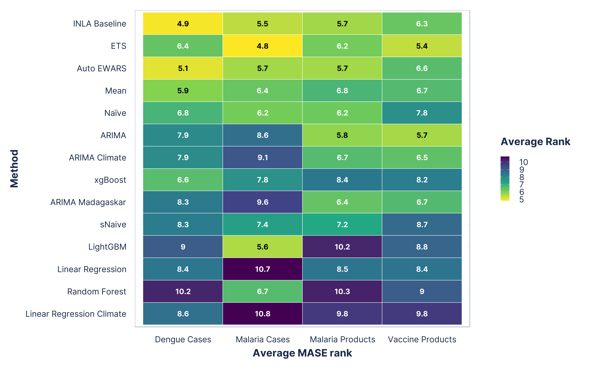

| Method | Covariates |
|---|---|
| Auto EWARS | Population, rainfall, teamperature |
| INLA Baseline | None |
| Naïve | None |
| sNaive | None |
| Mean | None |
| ETS | None |
| ARIMA | None |
| ARIMA Climate | Rainfall, temperature |
| ARIMA Madagaskar | Rainfall (Lag 3), temperature (Lag 3) |
| Linear Regression | Trend, seasonality |
| Linear Regression Climate | Trend, seasonality, rainfall, teamperature |
| LightGBM | Percentage of zero values, lags of target variable (lag 6 - 12), rainfall, temperature, month, healthcare facility code, product code |
| XGBoost | Percentage of zero values, lags of target variable (lag 6 - 12), rainfall, temperature, month, healthcare facility code, product code |
| Random Forest | Percentage of zero values, lags of target variable (lag 6 - 12), rainfall, temperature, month, healthcare facility code, product code |


Live Demo
Leveraging Chap and the DHIS2 Platform for Stock Forecasting
Data Lab for Social Good Research Group in collaboration with HISP Centre, University of Oslo
2026/01/27
Outline
Background
The fundamental question
What we are going to do
What did we find
Live demo
BACKGROUND

The Problem: A tale of two data streams
Health supply chains are struggling with forecasting at sub-national/ facility level.
Operational realities: Incomplete records, irregular orders, frequent manual adjustments.
This masks true demand and leads to a cycle of persistent, critical stockouts.
But… we have a success story.
Platforms like DHIS2 and CHAP have robust, high-performing models for forecasting disease cases (morbidity).
The fundemental question
✅ We’re good at forecasting cases (e.g., malaria).
❌ We’re struggling with forecasting consumption (e.g., antimalarials) at sub-national level.
Can the same CHAP morbidity models and pipelines be ported to health commodity demand and inventory decisions?
Portability lens
- Same platform (DHIS2/CHAP)
- Same model pipelines
- New target (consumption)
The challenge: Why isn’t this easy?
Case data and consumption data are different.
Different Data Structures
Consumption data is “messier”.
- Missing entries (e.g., “0” = no consumption, or “0” = data not entered?)
- Intermittency (infrequent demand).
- Inconsistent recording.
Different Metadata
Consumption is affected by logistics.
- Lead times.
- Procurement cycles.
- Existing stock levels and stockouts.
OUR APPROACH

What we are going to do
Apply the same CHAP morbidity models (no extra tuning) to product demand (malaria commodities, vaccines).
Link forecasts to operations: evaluate both forecast accuracy and inventory impact.
Build a portability matrix: when can we transfer a model?
Design an implementation workflow for DHIS2/CHAP.
Provide R scripts, CHAP YAML configs and sample datasets for full reproducibility.
Our experimental workflow

Data sources
| Data source | Domain | Geography / Sites | Coverage period | Granularity |
|---|---|---|---|---|
| DHIS2 | Dengue cases | Brazil (23 locations) | 2001 Jan – 2017 Dec | Monthly, subnational |
| Laos (7 locations) | 2000 Jul – 2013 Jun | Monthly, subnational | ||
| Paraguay (16 locations) | 2012 Mar – 2017 Dec | Monthly, subnational | ||
| Vietnam (19 locations) | 2000 Jul – 2017 Jun | Monthly, subnational | ||
| DHIS2 | Malaria incidence | Rwanda (30 locations) | 2015 Jan – 2024 Dec | Monthly, subnational |
| DHIS2 / LMIS | Malaria commodities | Laos (11 products, 18 facilities) | 2019 Feb – 2021 Jun | Monthly, subnational |
| DHIS2 / LMIS | Vaccine consumption | Laos (21 products, 10 facilities) | 2021 Feb – 2024 Jan | Monthly, subnational |
| DHIS2 Climate App | Climate covariates | All study settings | Study-specific | Monthly, subnational |
Overview of the candidate models
FINDINGS
Data exploration

Figure 1: Classification of all morbidity and consumption series using the ln(CV²) and ln(IDI) map. Each point represents a monthly series plotted on the logarithmic CV²–IDI scale.
Average forecast method rankings
Figure 2: Average point forecast (MASE) ranks. Methods on the y-axis are ordered from best (top) to worst (bottom) based on their overall average rank across all domains. Lower ranks indicate better performance.
Average forecast method rankings
Figure 3: Average probabilistic forecast (quantile loss) ranks. Methods on the y-axis are ordered from best (top) to worst (bottom) based on their overall average rank across all domains. Lower ranks indicate better performance.
Overall inventory performance - Malaria products

Figure 4: Inventory performance across malaria-product simulations using quantile-based order-up-to policies (q80–q97.5).
Overall inventory performance - Vaccine

Figure 5: Inventory performance across vaccine-product simulations using quantile-based order-up-to policies (q80–q97.5).
Execution scalability of all forecasting methods

Figure 6: Model portability metrics for all candidate forecasting methods, relative to the Mean method. Relative MASE and QL(0.9) are reported separately for malaria and vaccine products; values below 1 indicate improvement over the Mean method.
What does this mean for supply chain forecasting?
Can the same DHIS2 / CHAP platform be used for supply chain forecasting?
Yes, the platform is generic and extensible beyond disease surveillance.
Can one model work well for all supply chain problems?
Not really, demand patterns, data quality, and decision contexts differ. However, a small set of models tend to perform consistently well across settings.
How does CHAP handle this heterogeneity?
CHAP gives full autonomy to plug in, test, and select models based on the use case, rather than enforcing a single “best” model.
Do we need system-level adaptations for supply chains?
Yes, modest but important tweaks are needed (data structures, evaluation metrics, and decision-oriented outputs).
LIVE DEMO
Resources
GitHub repo with all R codes and YML configurations
Documentation for Model Developers
Configure DHIS2 Modeling App and Chap Core
Pay Attention
This demo shows how existing CHAP pipelines can run external forecasting and inventory models using external data, without modifying core workflows; therefore, some variables are renamed purely for schema compatibility (e.g., dispensed → disease_cases), with no change to data meaning or modelling logic.
Minimalistic model example using R
# List packages
library(tidyverse)
library(fable)
library(tsibble)
# train models - # auto ets model
train_chap <- function(csv_fn, model_fn) {
df <- read_csv(csv_fn) |>
mutate(target = if_else(is.na(target), 0, target),
time_period = yearmonth(time_period))
df <- df |> distinct() |>
as_tsibble(index = time_period, key = location) |>
fill_gaps(target=0L, .full = TRUE)
model <- df |>
model(ets = ETS(target))
saveRDS(model, file=model_fn)
print('train done')
}
args <- commandArgs(trailingOnly = TRUE)
if (length(args) == 2) {
csv_fn <- args[1]
model_fn <- args[2]
train_chap(csv_fn, model_fn)
}# else {
# stop("Usage: Rscript train.R <csv_fn> <model_fn>")
#}# Load required libraries
library(tidyverse)
library(fable)
library(tsibble)
# Define the predict function
predict_chap <- function(model_fn, historic_data_fn, future_climatedata_fn, predictions_fn) {
# Load the pre-trained model structure
model <- readRDS(model_fn)
print('read model')
# Load the complete historical data
historic_df <- read_csv(historic_data_fn) |>
mutate(target = if_else(is.na(target), 0, target),
time_period = yearmonth(time_period)) |>
as_tsibble(index = time_period, key = location) |>
fill_gaps(target=0L, .full = TRUE)
# Load the future data (covariates only)
future_df <- read_csv(future_climatedata_fn) |>
mutate(time_period = yearmonth(time_period)) |>
as_tsibble(index = time_period, key = location)
print('load_data')
# Refit the model with all historic data and forecast
model <- model |>
refit(historic_df)
y_pred <- model |>
generate(new_data = future_df, bootstrap = FALSE, times = 1000) |>
mutate(.rep = as.integer(.rep)) |>
arrange(.rep) |>
pivot_wider(names_from = .rep, values_from = .sim, names_prefix = "sample_")
print(y_pred)
# saveRDS(model, file = model_fn)
df_out <- future_df |>
left_join(y_pred |>
select(-.model) |>
mutate(across(starts_with("sample_"), ~ if_else(. < 0, 0, .))) |>
rename_with(~ paste0("sample_", as.integer(str_extract(., "\\d+")) - 1), starts_with("sample_")),
by = c('location', 'time_period')
) |>
as_tibble() |>
mutate(time_period = format(as.Date(time_period), "%Y-%m")) |>
select(time_period, location, starts_with("sample_"))
print('made predictions')
df_out |> print()
write.csv(df_out, predictions_fn, row.names = FALSE)
fname <- paste0("df_out_", format(Sys.time(), "%Y%m%d_%H%M%S"), predictions_fn)
write_csv(y_pred, fname)
}
# --- Command Line Argument Handling (No change here) ---
args <- commandArgs(trailingOnly = TRUE)
if (length(args) == 4) {
model_fn <- args[1]
historic_data_fn <- args[2]
future_climatedata_fn <- args[3]
predictions_fn <- args[4]
predict_chap(model_fn, historic_data_fn, future_climatedata_fn, predictions_fn)
}
# Inventory sim
source('quantile_based_inventory_sim.R')name: ets-r
target: disease_cases
adapters: {'target': 'disease_cases'}
docker_env:
image: ets-r:latest
entry_points:
train:
parameters:
train_data: path
model: path
command: "Rscript train.R {train_data} {model}"
predict:
parameters:
historic_data: path
future_data: path
model: str
out_file: path
command: "Rscript predict.R {model} {historic_data} {future_data} {out_file}"FROM ghcr.io/dhis2-chap/docker_r_inla:master
RUN apt-get update
RUN apt-get install -y libharfbuzz-dev libfribidi-dev
RUN R -e 'r = getOption("repos"); r["CRAN"] = "http://cran.us.r-project.org"; options(repos = r); install.packages(c("tidyverse", "fable", "tsibble", "fabletools", "fpp3", "doParallel"), repos=c(getOption("repos"), dep=TRUE))'Inventory policy: Order-upto-level with lost sales
# Inventory simulation
library(tidyverse)
library(tsibble)
library(doParallel)
set.seed(100)
# Read data ---------------------------------------------------------------
actual_df <- read.csv('data/laos/laos_epi_cleaned.csv') |>
rename(date = time_period,
dispensed = disease_cases) |>
select(date, location, dispensed) |>
as_tibble()
pred_all <- read.csv('predictions.csv')
pred_master_df <- pred_all |>
rename(date = time_period) |>
mutate(across(starts_with("sample"), ~ pmax(., 0))) |>
rowwise() |>
mutate(
mean = mean(c_across(starts_with("sample")), na.rm = TRUE) * 3,
q80 = quantile(c_across(starts_with("sample")), probs = 0.80, na.rm = TRUE, names = FALSE),
q85 = quantile(c_across(starts_with("sample")), probs = 0.85, na.rm = TRUE, names = FALSE),
q90 = quantile(c_across(starts_with("sample")), probs = 0.90, na.rm = TRUE, names = FALSE),
q95 = quantile(c_across(starts_with("sample")), probs = 0.95, na.rm = TRUE, names = FALSE),
q975 = quantile(c_across(starts_with("sample")), probs = 0.975, na.rm = TRUE, names = FALSE)
) |>
ungroup() |>
select(date, location, mean, q80, q85, q90, q95, q975)
master_df <- pred_master_df |>
left_join(actual_df, by = c('date', 'location')) |>
mutate(date = as.Date(paste0(date, "-01")))# Inventory function ------------------------------------------------------
master_long <- master_df |>
# filter(location == '0701larmany-0701 Xamnua-BCG diluent' & model == 'ETS') |>
pivot_longer(cols = c('mean', 'q80', 'q85', 'q90', 'q95', 'q975'), names_to = 'target_csl', values_to = 'quantity') |>
mutate(id = paste0(location, ':', target_csl))
id_list <- master_long |>
pull(id) |>
unique()
# Register outer parallel backend with multiple cores
n_cores <- detectCores(logical = FALSE) - 1 # 16 physical cores – 1 = 15
cl_outer <- makeCluster(n_cores)
registerDoParallel(cl_outer)
# parallel loop
system.time(inventory_sim_full <- foreach(i = id_list,
.combine = 'rbind',
.packages=c("doParallel", "foreach", "tidyverse", "tsibble", "fable")) %dopar% {
# i <- id_list[1]
df <- master_long |>
filter(id == i) |>
group_by(location, target_csl) |>
arrange(date) |>
mutate(
target_stock = quantity,
opening_stock = 0,
received = 0,
closing_stock = 0,
order_qty = 0,
delivery_due = NA,
fixed_lead_time = 1
)
deliveries <- list()
for (i in seq_len(nrow(df))) {
today <- df$date[i]
# Receive orders
arrivals <- deliveries |>
keep(~.x$arrival_date == today) |>
map_dbl("amount") |>
sum()
df$opening_stock[i] <- if (i == 1) arrivals else df$closing_stock[i - 1] + arrivals
actual <- df$dispensed[i]
df$received[i] <- arrivals
df$closing_stock[i] <- max(0, df$opening_stock[i] - actual)
# Place order
order_qty <- max(0, df$target_stock[i] - df$closing_stock[i])
lead_time <- df$fixed_lead_time[i]
delivery_date <- today %m+% months(lead_time)
deliveries <- append(deliveries, list(list(arrival_date = delivery_date, amount = order_qty)))
df$order_qty[i] <- order_qty
df$delivery_due[i] <- delivery_date
}
inventory_sim <- df |>
mutate(
lost_sales = pmax(0, dispensed - pmin(dispensed, opening_stock)),
met_demand = dispensed <= opening_stock,
stockout = dispensed > opening_stock
)
inventory_sim
})
# Stop outer cluster
stopCluster(cl_outer)
# Final data
write_csv(inventory_sim_full, 'inventory_sim.csv')
# Inventory value added ---------------------------------------------------
inv_metrics <- inventory_sim_full |>
group_by(location, target_csl) |>
slice(-1) |>
summarise(
CSL = round(mean(met_demand, na.rm=TRUE), 1),
stockout_rate = round(mean(stockout, na.rm=TRUE), 1),
avg_inventory = round(mean(mean((opening_stock+closing_stock)/2, na.rm=TRUE), 1)),
# avg_inventory = round(mean(if_else(order_qty >= 0.1,
# ((opening_stock+closing_stock)/2)/order_qty, NA_real_),
# na.rm=TRUE), 1),
.groups = "drop"
)
fname <- paste0("df_out_", format(Sys.time(), "%Y%m%d_%H%M%S"), 'inventory.csv')
write_csv(inv_metrics, fname)Running models through Chap (docker + WSL)
Connect with CHAP Core
Create docker image
Run CHAP evaluation
Any questions or thoughts? 💬